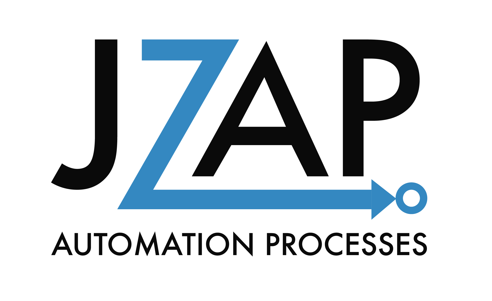

Hi, I'm Jack Zarifeh
I'm here to revolutionize your business with voice AI solutions!
Integrating AI, especially voice AI, into your business can be daunting. Let me simplify the process, so you can focus on what you do best. I'll help you harness the power of cutting-edge voice AI technology to transform your operations and deliver an exceptional experience to your customers.

A bit about me
I'm Jack Zarifeh, from Christchurch, New Zealand, with a background in mechatronics engineering (BE(hons)). My journey into AI began in an unusual place — developing facial recognition for sheep at an agritech startup! This gave me hands-on experience with AI's potential and sharpened my skills in machine learning, computer vision, and data analysis.
Seeing how AI can transform businesses, I shifted my focus to automation, particularly voice AI. Today, I'm passionate about creating solutions that simplify complex processes, enhance customer interactions, and ultimately drive success.
